01 启动与会话恢复
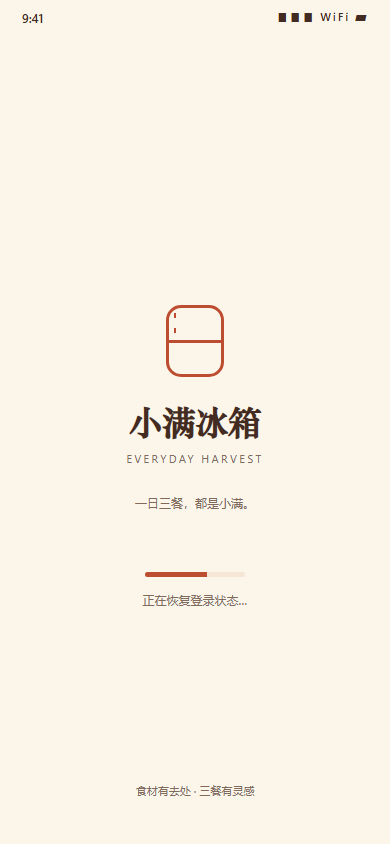
02 登录 · 桌面
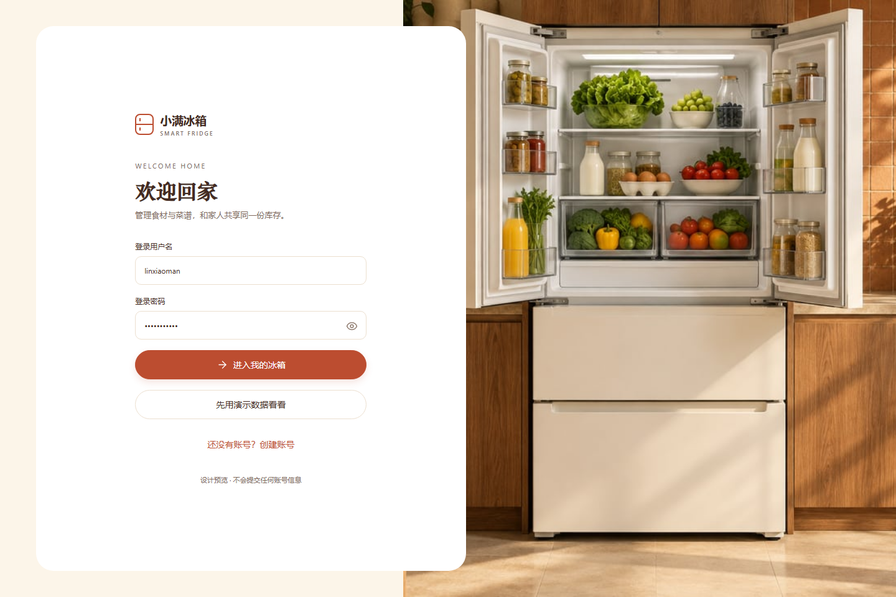
03 登录 · 手机
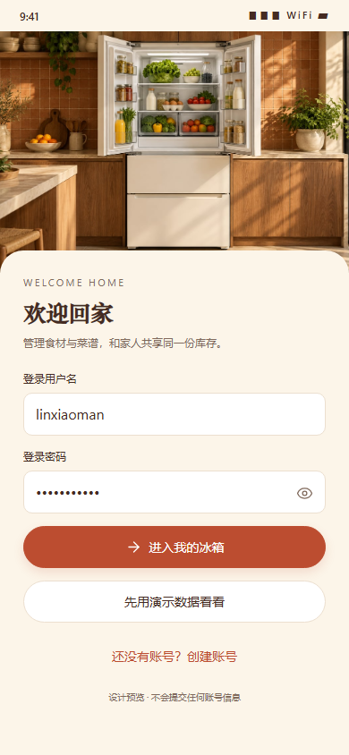
04 注册 · 桌面

05 注册 · 手机

06 我的冰箱 · 桌面
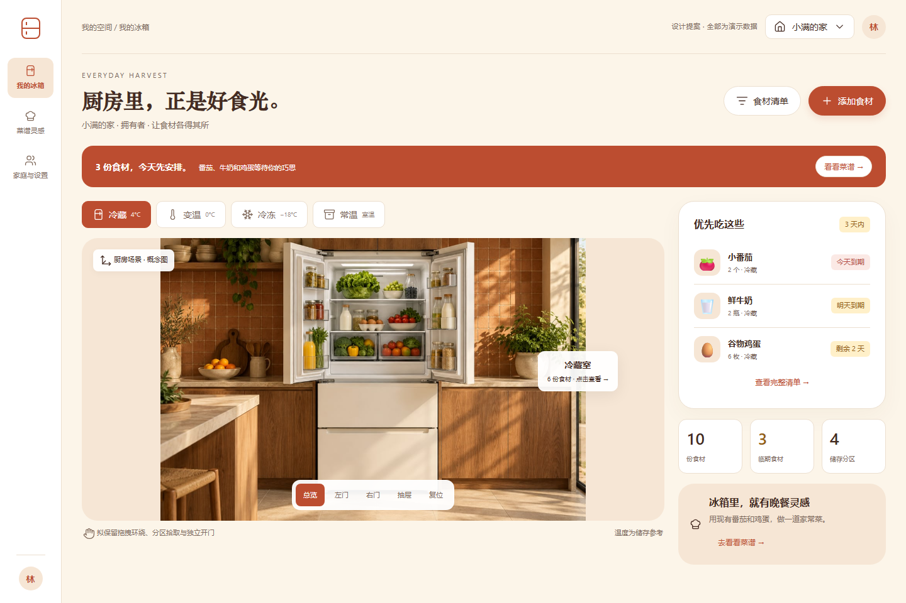
07 我的冰箱 · 手机
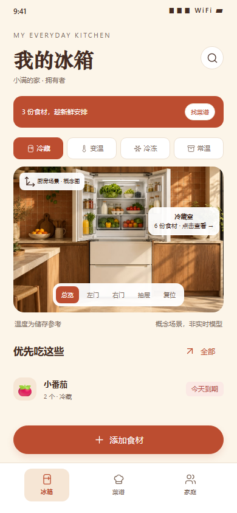
08 清单与组合筛选 · 桌面

09 清单与组合筛选 · 手机

10 新增食材

11 食材详情与使用 / 移动

12 菜谱灵感 · 桌面
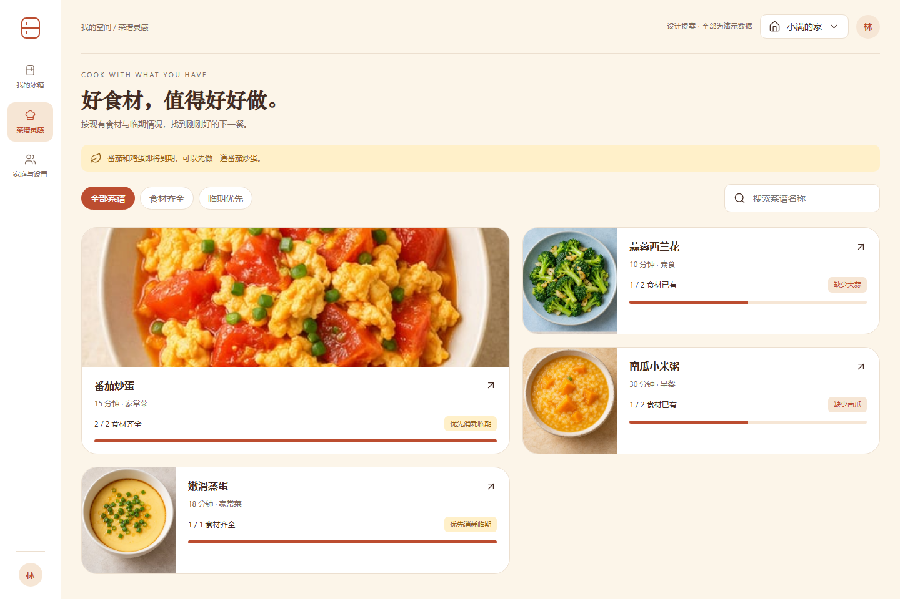
13 菜谱灵感 · 手机
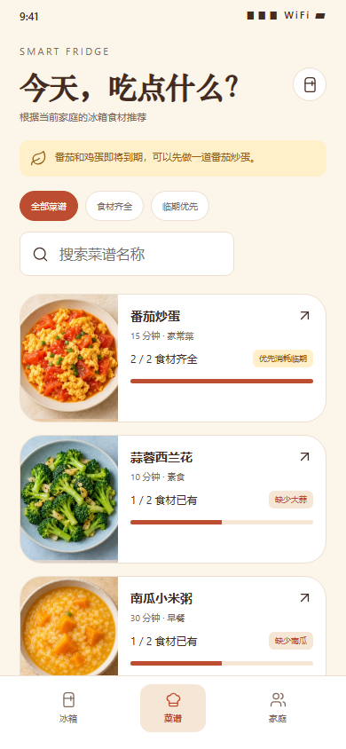
14 菜谱详情

15 家庭与设置 · 桌面

16 家庭与设置 · 手机
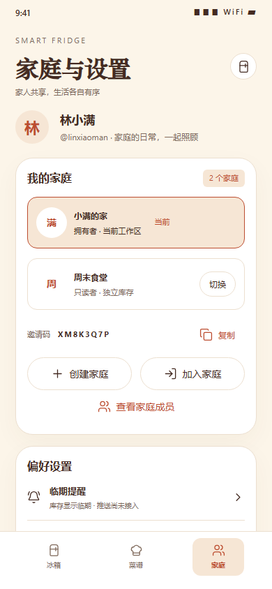
17 家庭成员与角色

18 创建家庭

19 加入家庭
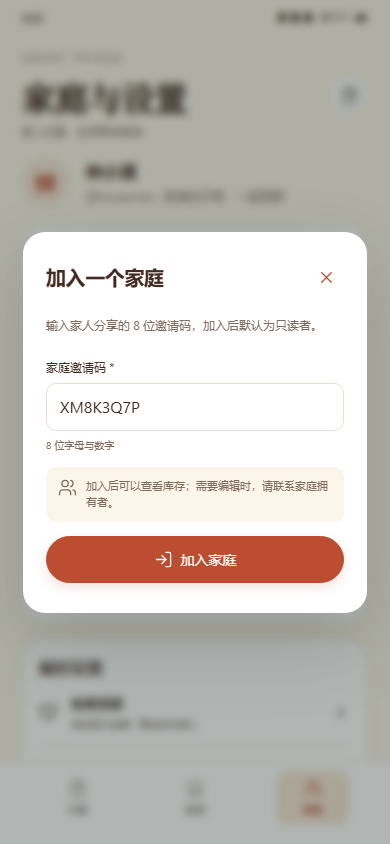
20 无冰箱 / 创建引导

21 冰箱布局 · 只读

22 提醒与外观说明
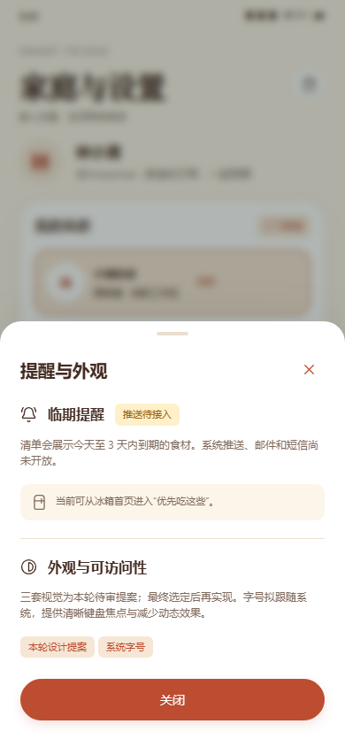
23 丢弃 / 移除 / 转交 / 退出确认

24 空结果 / 加载失败 / 只读
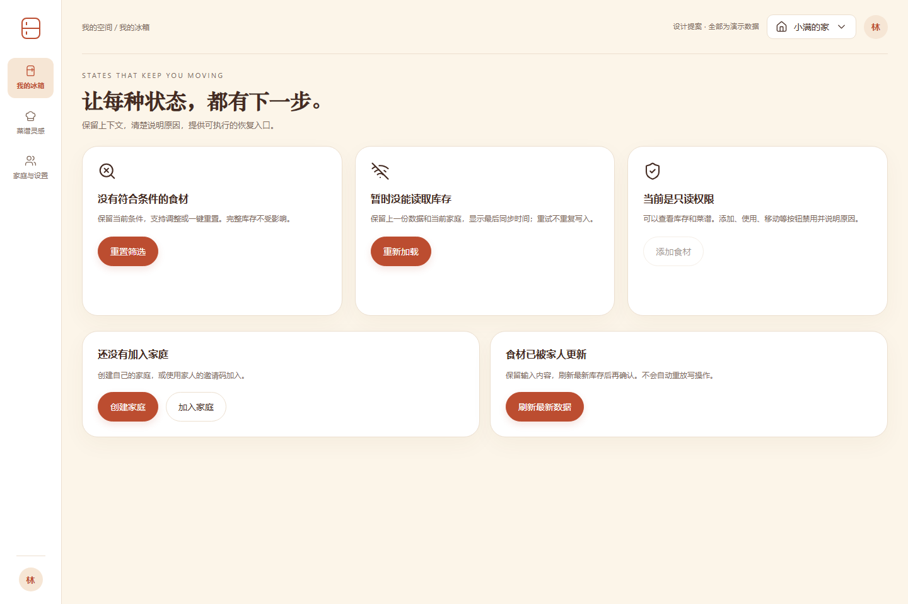
25 运营端登录

26 数据看板

27 菜谱管理
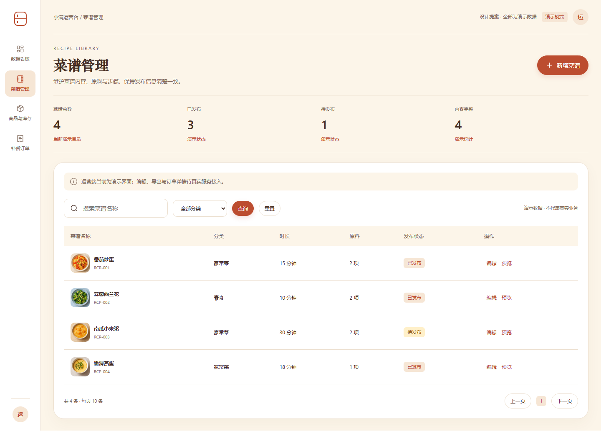
28 商品与库存
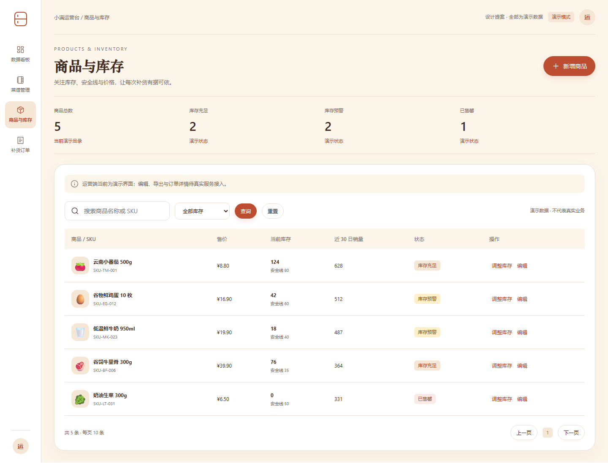
29 补货订单
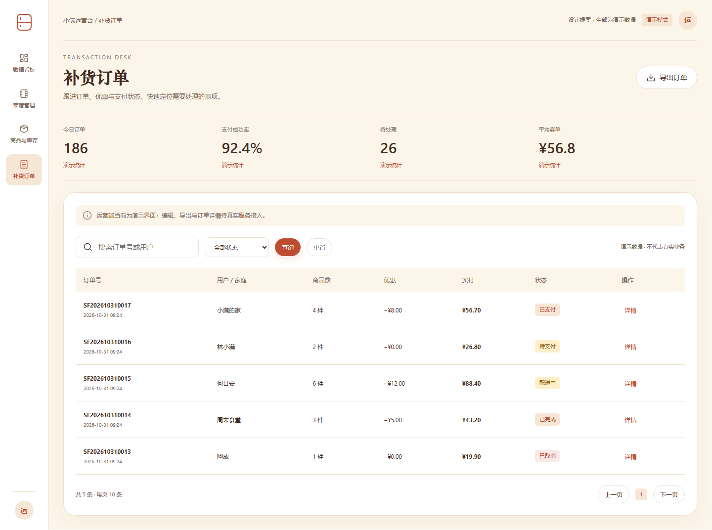
30 页面过渡与按钮状态
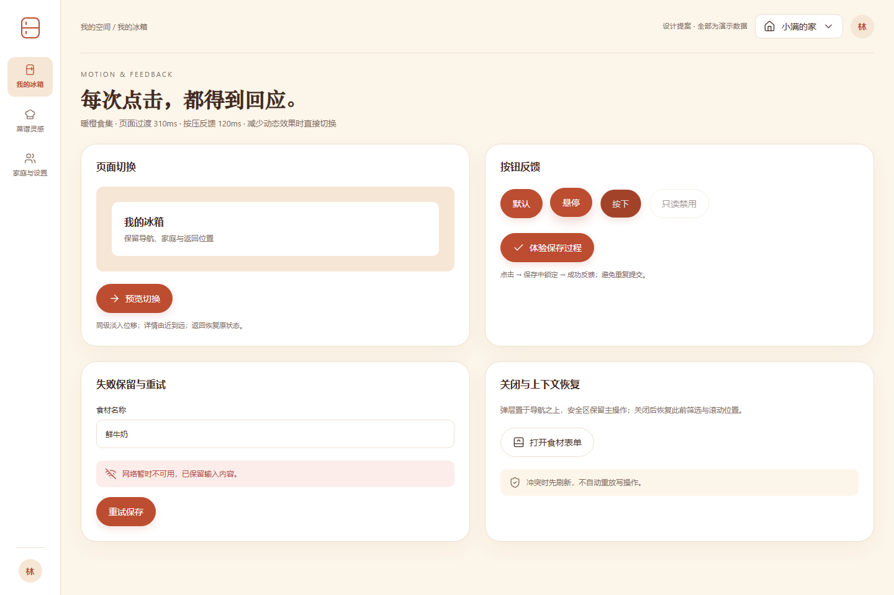